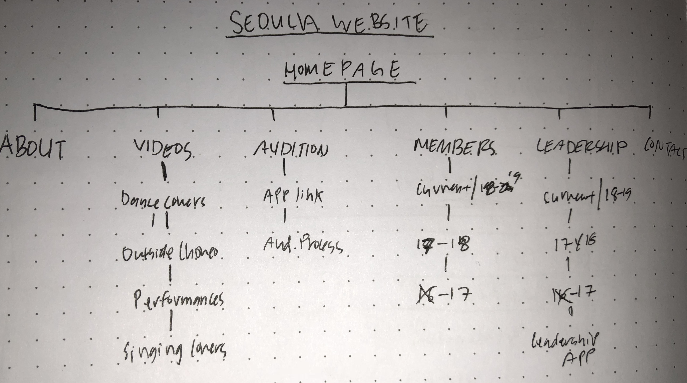
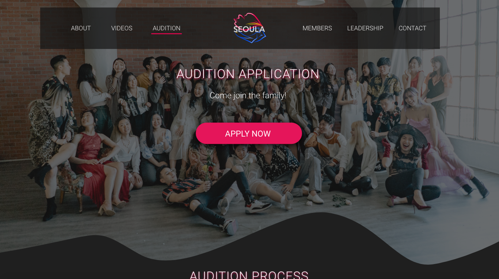
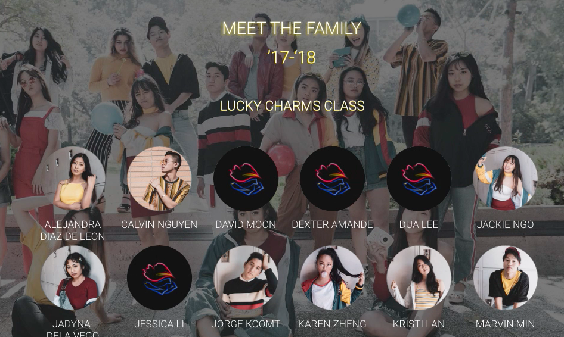
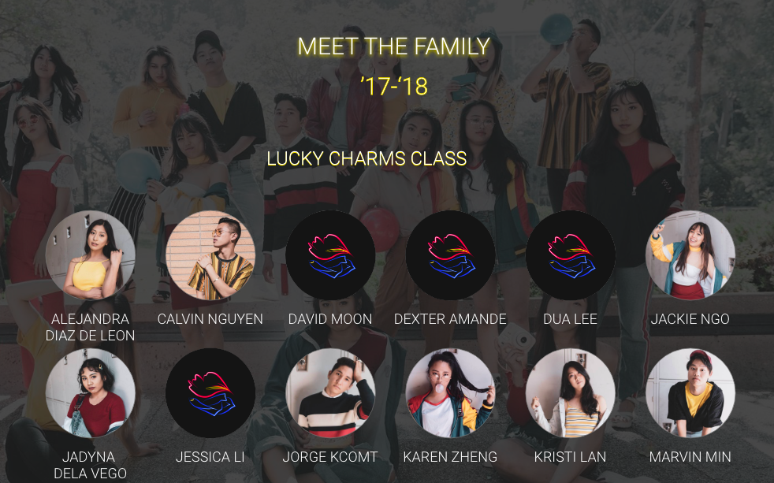
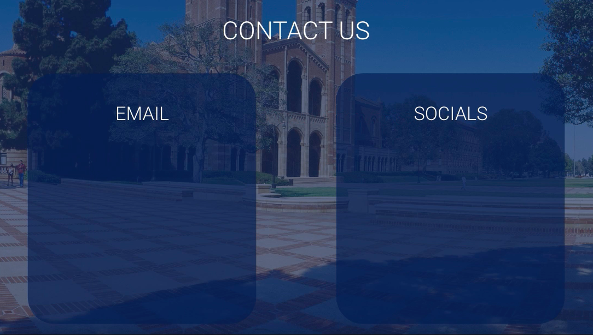
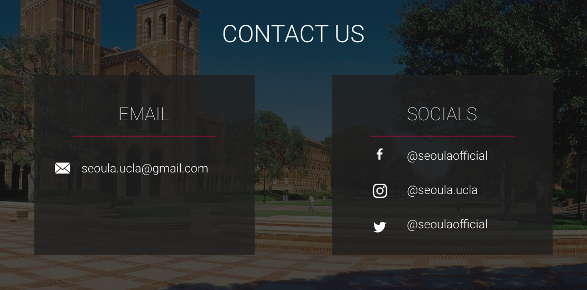
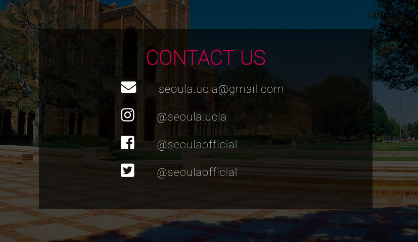

SEOULA: Web Design and Development
A creative dance team comprised of students with an unchanging passion for dance and Korean-American pop culture.
OVERVIEW
As SEOULA began growing as an organization, it’s information became increasingly scattered across its social media platforms, making it more and more difficult for current and potential members to access their desired SEOULA content and get answers to questions. After 3 months of joining the team and becoming the team’s Graphic Designer soon after, I wanted to create a website for SEOULA as a place where all our content and information can be compiled into one, easy-to-access source.
ROLE
For this project, I was both the UX designer and the Front-end developer. I designed, prototyped, and tested the website in Adobe XD and developed it using my recently self-taught HTML and CSS skills. Throughout the process, I consistently communicated with the other SEOULA staff members for feedback on the design and to ensure the website was the desired representation of our team and that we agreed on all the details.
THE PROCESS
Defining + initial thoughts
Upon my first meeting with the other staff members, we decided we wanted the website to have an elegant, classy feel that also displayed the sense of community and trust that is instilled in our team. We also determined that our demographic consists mainly of college students or those who are around the college age. With all this in mind, I decided to opt for a darker color scheme to give off the elegant and classy feel and chose the Roboto font to give off a modern feel for our young-adult demographic. I also compiled the team pictures and individual shots from our photoshoots for the team-community aspect.
Design Process
I began by listing out the different pages that would be included in the website and charting the user-flow. Afterwards, I created low-fidelity sketches of each page in my notebook and mid-fidelity mock-ups using Adobe XD. Once I had my wireframes down, I moved on to creating a high-fidelity prototype in Adobe XD.
The Flow:
Sample of Prototype Process:


User-Testing and Revisions
One user pointed out that the “Members” page was difficult to read because of the white text over the bright background, so I increased the opacity of the black overlay on the background image.
 Another user also pointed out that the grey background on the “About” page clashed with the bright yellow text, which made it difficult to read and was an unusual color combination. Additionally, the curved corners of the box encompassing the text was inconsistent with the pointed edges of the header and other pages in the website.
I also went through 3 different versions of the “Contact” page. The first version felt incohesive in comparison to the rest of the website due to the bright background and blue overlays. The second version was the desired aesthetic but consisted of a lot of unnecessary white space in the “email” section that make the page more cluttered than it needed to be. The third version was closest to what I had in mind and consisted of the aesthetic of the second version while also reducing the extra white space.
Version 1:
Version 2:
Version 3:
REFLECTIONS
As my first UX project and one of my first times using HTML/CSS, I ran into a lot of bumps and uncertainties but learned a lot through trial and error and endless Google-ing. Though a challenging process, this was an exciting project to tackle. I learned a lot and discovered a lot of useful resources and how to utilize them. Prior to taking on this project, I had onlybeen exposed to the UX/UI and design worlds for a few months, so this was a great way for me to kickstart my design journey and grow more and more as a designer. Through the feedback from users, I was able to raise my awareness on the blending of colors and become more cautious of my margins. With more experience in the future, I hope to be more creative with my designs and layouts and experiment more with effects using JavaScript.